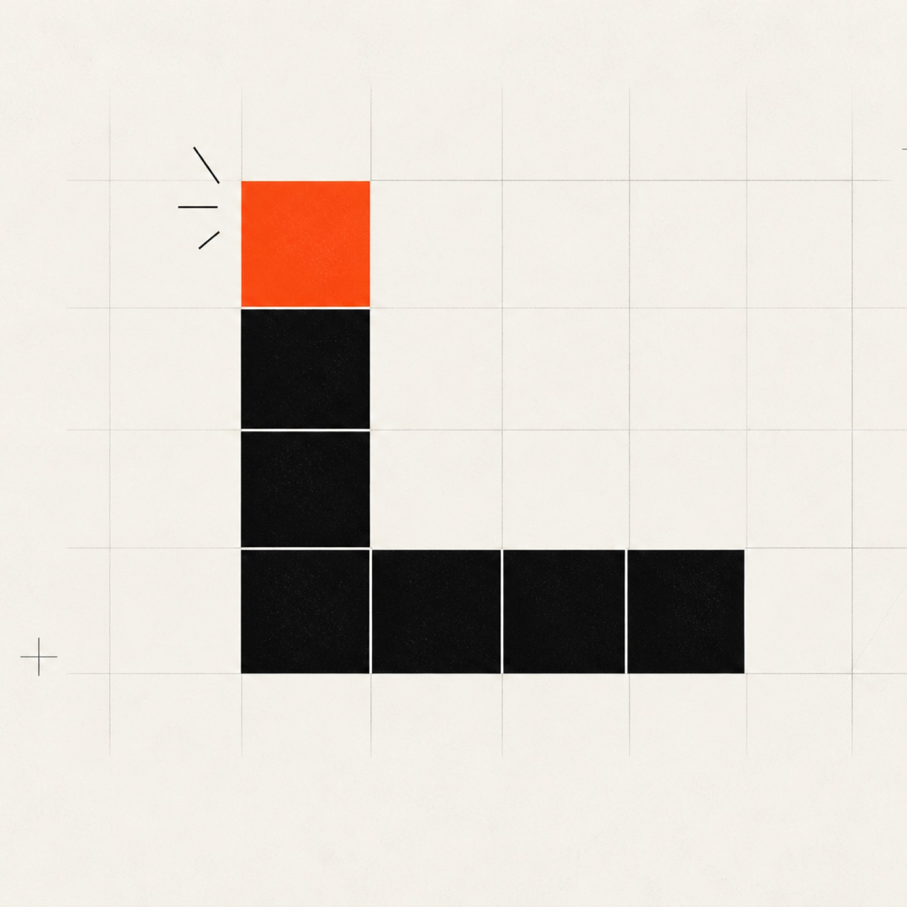

What we actually build.
Seven productised services, from a single AI Audit to full custom software. Most engagements start with a paid Audit, then a fixed-scope build. Pricing is quoted after a 30-minute discovery call.

- Services
- Seven, one team
- Front door
- AI Audit, 1 to 2 weeks
- Delivery tracks
- Lean and Premium
- Pricing
- Quoted after a 30-minute call
Seven practices, one bar.
Most practices run on two tracks: Lean for SMEs, Premium for enterprise. Every engagement is scoped to the job in front of it.
- 01AI Audit & Roadmap We find the work worth automating and rank it, before anything gets built. 1 to 2 weeks · Flat fee
- 02AI Workflow Automation Make, Zapier or n8n as the spine, with AI models where they earn their place. Lean and Premium
- 03Document & Knowledge Agents KYC packs, contracts and invoices read and routed. Answers with citations. Per build
- 04Decision Systems From a single-source pipeline to a multi-source warehouse with agents on top. Lean and Premium
- 05Custom AI Software & Tools Internal CRMs, ops dashboards and workflow tools with agents inside. Per project
- 06UI/UX Design From an 8-screen design pack to a full design system with research. Lean and Premium
- 07Marketing Sites Up to 8 pages on Next.js, fast, accessible and easy for AI search to read. 2 to 3 weeks
Find the five to ten jobs worth automating.

- Length
- 1 to 2 weeks
- Scope
- Fixed
- Fee
- Flat
01 AI Audit & Roadmap
A productised 1 to 2 week engagement. We walk your business, identify 5 to 10 high-impact automation opportunities, and deliver a prioritised roadmap with effort estimates. Most builds start here.
- 5 to 10 hour workshop with your team
- Process mapping and shadow sessions
- Prioritised opportunity roadmap with ROI estimates
- Effort estimates per opportunity (S, M, L, XL)
- Build-ready scope for the top 3 opportunities
Then a fixed-scope build, sized to the job.
-
02 · Lean and Premium
AI Workflow Automation.
Intelligent automation across business processes using Make, Zapier, n8n, and integrated AI models. Reduces manual workload and improves operational consistency.
Lean / SME
Scoped per workflow
- Up to 5 connected systems
- Make, Zapier, or n8n as the spine
- Single AI model integration where useful
- Documentation and handover
Premium / Enterprise
Scoped per workflow or system
- Multi-step workflows across the org
- Custom integrations beyond Zapier templates
- Multiple AI models, eval harness, fallbacks
- Monitoring, alerting, retraining loop
- Change management and team enablement
-
03 · Per build
Document & Knowledge Agents.
Agents that read, classify, and route documents: KYC, contracts, invoices, compliance packs. RAG-powered knowledge bases that answer questions across your internal data.
Per build
Scoped per build
- Document parsing, OCR, structured extraction
- Classification and routing rules
- RAG knowledge base with citations
- Eval harness with human-in-the-loop sampling
- Audit log for every decision (compliance-ready)
-
04 · Lean and Premium · Formerly Data & BI
Decision Systems.
Data pipelines, live dashboards, and AI agents that interpret your data and surface what matters: anomaly detection, automated reporting, decisions routed to the right people.
Lean / SME
Scoped per pipeline
- Single-source pipeline (CSV, Sheets, API)
- Live dashboard, Looker Studio or Metabase
- Scheduled reports
- Alerting on simple thresholds
Premium / Enterprise
Scoped per warehouse + agents
- Multi-source warehouse (BigQuery, Snowflake)
- Custom dashboards on your stack
- Anomaly detection with AI agents
- Decisions auto-routed to Slack, email, or systems
- Data quality monitoring
-
05 · Per project
Custom AI Software & Tools.
Next.js applications with Claude agents baked in: internal CRMs, ops dashboards, workflow tools. Built on your stack or ours.
Project pricing
Scoped per project
- Next.js + TypeScript application
- Claude agents embedded in workflows
- Auth, roles, audit logging
- Deployed on your infra or Vercel
- 2 weeks of post-launch support included
-
06 · Lean and Premium
UI/UX Design.
Web, mobile, and internal tooling design, built for build-readiness.
Lean / SME
Scoped per design pack
- Up to 8 screens, single platform
- Design system fundamentals (type, colour, spacing)
- Clickable prototype for stakeholder approval
- Handover with annotated specs
Premium / Enterprise
Scoped per system + research
- Full design system with tokens
- Multi-platform (web, mobile, internal tools)
- User research and usability testing
- Build-ready handoff with engineering pairing
-
07 · Per project · 2 to 3 weeks
Marketing Sites.
Production-quality Next.js marketing sites in 2 to 3 weeks. AI-assisted delivery: we ship in weeks what agencies quote in months.
Per project
Scoped per project, 2 to 3 weeks
- Up to 8 pages, fully responsive
- Next.js + TypeScript, deployed on Vercel
- CMS integration where needed (Sanity, Contentful)
- Lighthouse 90+ Performance, 95+ Accessibility
- Built for AI discoverability (canonical, OG, JSON-LD, llms.txt)
Need Managed IT, BD, or Advertising?
We still deliver these for existing clients and on bundled engagements. They are no longer headline services, but the team is intact.
Start with an Audit.
1 to 2 weeks of structured discovery, scoped after a 30-minute call. You leave with a prioritised roadmap, real effort estimates, and a build-ready scope for the top 3 opportunities.